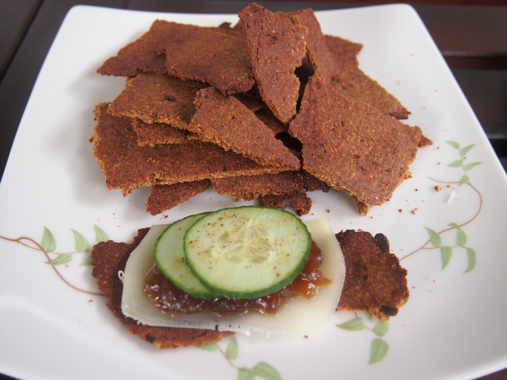
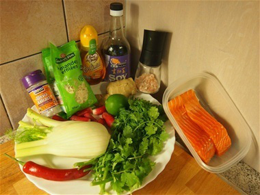
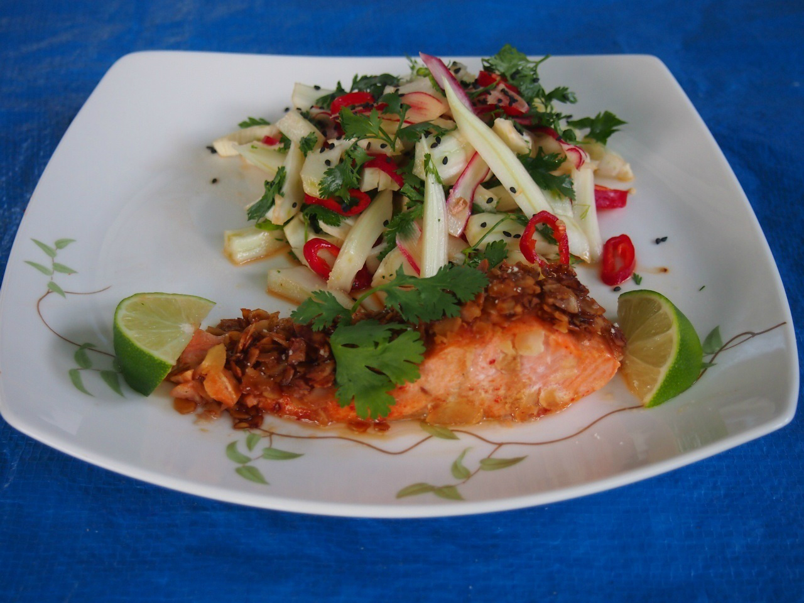
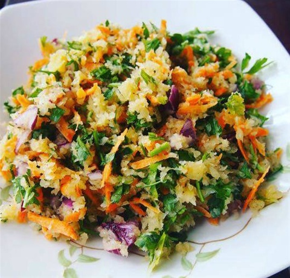

Snack
SnackBlueberry Protein Muffins
Light, fluffy muffins packed with blueberries and protein. Perfect pre or post workout.
View recipe → Snack
SnackProtein Cookies
Crispy on the outside, chewy inside. No refined sugar, full of goodness.
View recipe →
SnackCrunchy Crackers
Homemade crackers with seeds and spices. Great with hummus or on their own.
View recipe →
SuperfoodsNatural Superfoods
Polish sauerkraut salad — a natural probiotic Eliza grew up with in Poland.
View recipe → Breakfast
BreakfastHealthy Breakfast Bowl
Balanced macros, beautiful colours. The bowl that powers Eliza's morning workouts.
View recipe →
SummerSummer Recipes
Asian-inspired salmon with fennel salad — light, fresh and full of flavour.
View recipe → Summer
SummerSummer BBQ Skewers
Marinated chicken skewers — as healthy as they are crowd-pleasing.
View recipe →
SummerSummer Recipes No. 2
Cauliflower tabbouleh with carrot, herbs and red onion — grain-free and delicious.
View recipe →